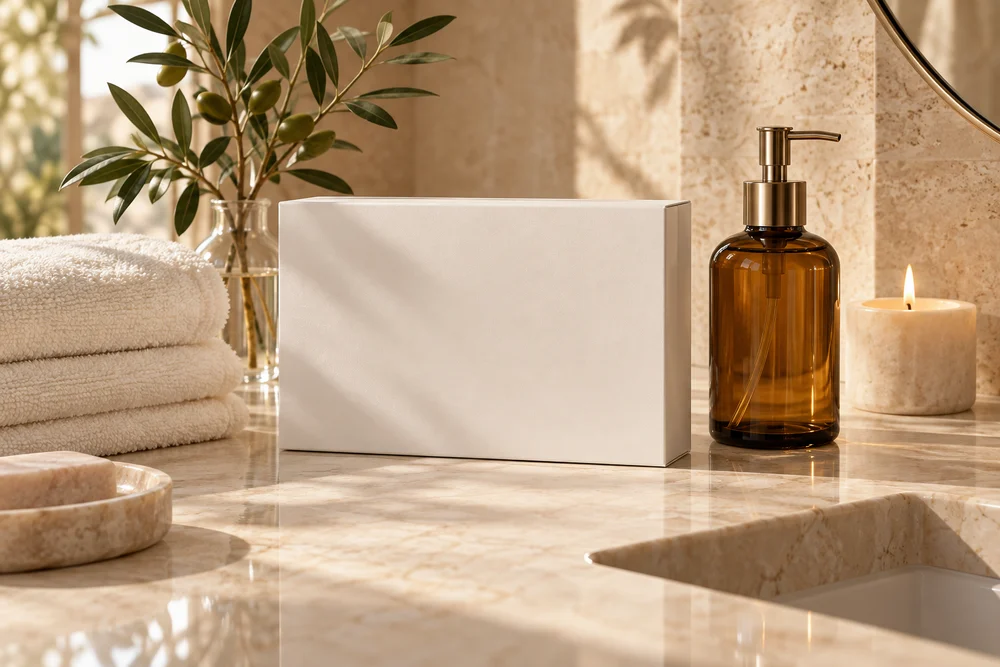

WELCOME TO MAISON SURGA
Beauty begins
with a moment
for yourself.
A quiet bathroom. A favourite routine. A little time that belongs to you.
Maison Surga starts with a simple idea: everyday beauty can be an act of care. We’re creating a world of beauty rituals that feels warm, personal and easy to make your own.
Our first collection is still taking shape. We’re beginning with facial cleansing, and looking forward to sharing the next chapter with you.
Discover the first edit ⟶